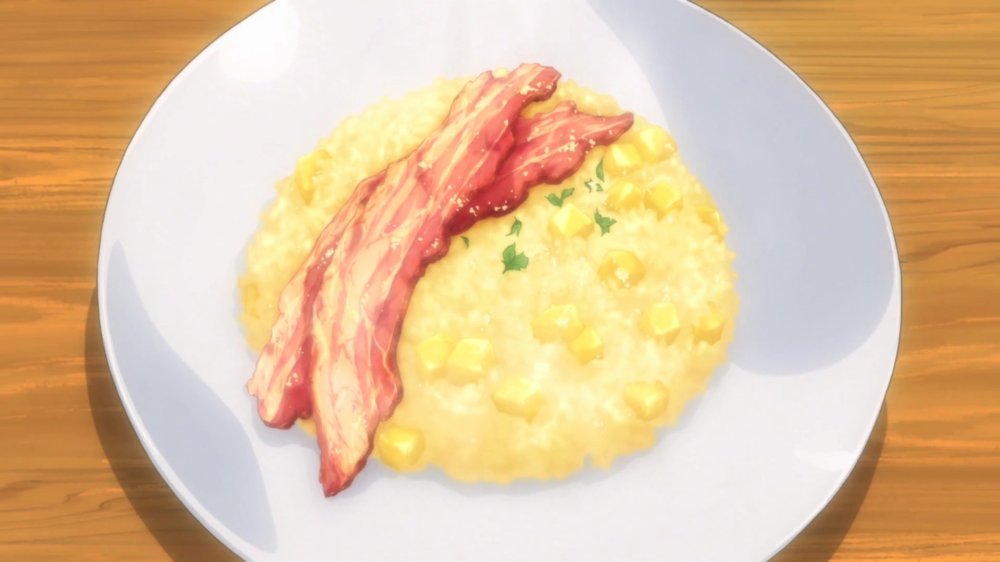

Description
With the challenge to create a breakfast dish to rejuvenate the eater, Sōma improvised this dish to revitalize Satoshi Isshiki,
Fumio Daimidō and Megumi Tadokoro.
Ingredients
For Risotto:
- 1/2 Apples
- 1 teaspoon of Lemon Juice
- 1/4 of Onion (Sauteed)
- 2 tablespoons of Butter
- 1/2 cup of Rice
- 2 tablespoons of White Wine
- 1 cup of Apple Juice
- 1 cup of Water
- 1 teaspoon of Granulated Consommé
- Salt & Pepper
For toppings:
- 4 slices of Thick-Cut Bacon
- Black Pepper
- Powdered Cheese
Instructions
- Cook the bacon in a frying pan until it's crispy and set to the side.
- Peel the apple and dice it in cubes of 1cm³.
- Mince the onion.
- Heat the butter in a frying pan and sauté the onions.
- Add the rice and cook until it's transparent.
- Add the white wine and cook it until the alcohol burns off.
- Mix the apple juice, water, and consommé. Slowly add this 1/8 cup at a time, simmering on low heat for 15 minutes (until all the liquid is absorbed).
- Add the apple pieces and lemon juice and season it to taste with salt and pepper.
- Place on a plate and top it with bacon
- You can use black pepper or powdered cheese as a topping.